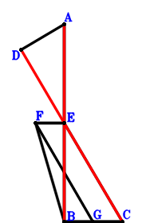
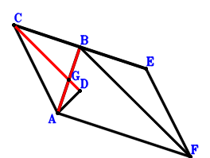

Exercise 416： Let FBCE be a trapezoid with BC//FE and BC=2FE. E, G are the midpoints of AB, BC, respectively. DA⊥FG and AB⊥BC. Given that D, E, C are collinear, prove that \(AB^{2}=4 DE \cdot EC\).

\(\because \) E is the midpoint of AB \(\therefore \small\overrightarrow{BE}=\dfrac{\small\overrightarrow{BA}}{2}\).\(\because \) BC//FE and BC=2FE \(\therefore \small\overrightarrow{BF}=\dfrac{\small\overrightarrow{BA}}{2} - \dfrac{\small\overrightarrow{BC}}{2}\).\(\because \) G is the midpoint of BC \(\therefore \small\overrightarrow{BG}=\dfrac{\small\overrightarrow{BC}}{2}\).\(\because \) AB⊥BC \(\therefore \small\overrightarrow{BA} \cdot \small\overrightarrow{BC}=0\) . . . . . . \(①\)\(\because \) DA⊥FG \(\therefore \small\overrightarrow{DA} \cdot \small\overrightarrow{FG}=\left(\small\overrightarrow{BA} - \small\overrightarrow{BD}\right) \cdot \left(- \small\overrightarrow{BF} + \small\overrightarrow{BG}\right)=\left(- \dfrac{\small\overrightarrow{BA}}{2} + \small\overrightarrow{BC}\right) \cdot \left(\small\overrightarrow{BA} - \small\overrightarrow{BD}\right)=- \dfrac{\small\overrightarrow{BA}^{2}}{2} + \small\overrightarrow{BA} \cdot \small\overrightarrow{BC} + \dfrac{\small\overrightarrow{BA} \cdot \small\overrightarrow{BD}}{2} - \small\overrightarrow{BC} \cdot \small\overrightarrow{BD}=0\) . . . . . . \(②\)In conclusion, \(\small\overrightarrow{BA}^{2} + 4 \small\overrightarrow{CE} \cdot \small\overrightarrow{DE}=\small\overrightarrow{BA}^{2} + 4 \left(- \small\overrightarrow{BC} + \small\overrightarrow{BE}\right) \cdot \left(- \small\overrightarrow{BD} + \small\overrightarrow{BE}\right)=\small\overrightarrow{BA}^{2} + 4 \left(\dfrac{\small\overrightarrow{BA}}{2} - \small\overrightarrow{BC}\right) \cdot \left(\dfrac{\small\overrightarrow{BA}}{2} - \small\overrightarrow{BD}\right)=2 \small\overrightarrow{BA}^{2} - 2 \small\overrightarrow{BA} \cdot \small\overrightarrow{BC} - 2 \small\overrightarrow{BA} \cdot \small\overrightarrow{BD} + 4 \small\overrightarrow{BC} \cdot \small\overrightarrow{BD}=2\cdot①-4\cdot②=0\)\(\because\) D, E, C are collinear \(\therefore\) \(AB^{2}=4 DE \cdot EC\).
Exercise 10127： Let EAFB be a trapezoid with AF//EB and AF=2EB. E, G are the midpoints of CB, AB, respectively. AD⊥CF and CB⊥BA. Given that C, G, D are collinear, prove that \(AB^{2}=4 CG \cdot GD\).
Exercise 26566： Let CAFE be a parallelogram. B, G are the midpoints of CE, AB, respectively. AD⊥BF and CB⊥BA. Given that C, G, D are collinear, prove that \(AB^{2}=4 CG \cdot GD\).

\(\because \) B is the midpoint of CE \(\therefore \small\overrightarrow{BE}=- \small\overrightarrow{BC}\).\(\because \) CAFE is a parallelogram \(\therefore \small\overrightarrow{BF}=\small\overrightarrow{BA} - 2 \small\overrightarrow{BC}\).\(\because \) G is the midpoint of AB \(\therefore \small\overrightarrow{BG}=\dfrac{\small\overrightarrow{BA}}{2}\).\(\because \) CB⊥BA \(\therefore \small\overrightarrow{BA} \cdot \small\overrightarrow{BC}=0\) . . . . . . \(①\)\(\because \) AD⊥BF \(\therefore \small\overrightarrow{DA} \cdot \small\overrightarrow{FB}=- \small\overrightarrow{BF} \cdot \left(\small\overrightarrow{BA} - \small\overrightarrow{BD}\right)=- \left(\small\overrightarrow{BA} - 2 \small\overrightarrow{BC}\right) \cdot \left(\small\overrightarrow{BA} - \small\overrightarrow{BD}\right)=- \small\overrightarrow{BA}^{2} + 2 \small\overrightarrow{BA} \cdot \small\overrightarrow{BC} + \small\overrightarrow{BA} \cdot \small\overrightarrow{BD} - 2 \small\overrightarrow{BC} \cdot \small\overrightarrow{BD}=0\) . . . . . . \(②\)In conclusion, \(\small\overrightarrow{BA}^{2} + 4 \small\overrightarrow{CG} \cdot \small\overrightarrow{DG}=\small\overrightarrow{BA}^{2} + 4 \left(- \small\overrightarrow{BC} + \small\overrightarrow{BG}\right) \cdot \left(- \small\overrightarrow{BD} + \small\overrightarrow{BG}\right)=\small\overrightarrow{BA}^{2} + 4 \left(\dfrac{\small\overrightarrow{BA}}{2} - \small\overrightarrow{BC}\right) \cdot \left(\dfrac{\small\overrightarrow{BA}}{2} - \small\overrightarrow{BD}\right)=2 \small\overrightarrow{BA}^{2} - 2 \small\overrightarrow{BA} \cdot \small\overrightarrow{BC} - 2 \small\overrightarrow{BA} \cdot \small\overrightarrow{BD} + 4 \small\overrightarrow{BC} \cdot \small\overrightarrow{BD}=2\cdot①-2\cdot②=0\)\(\because\) C, G, D are collinear \(\therefore\) \(AB^{2}=4 CG \cdot GD\).